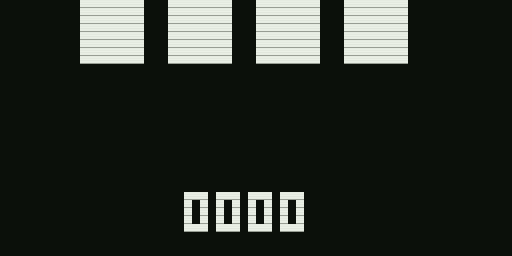
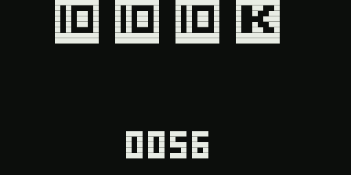
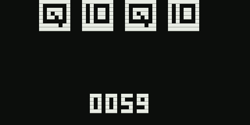

Fully Automatic Four Wheel Poker Machine
J. Panos · DREAMER no. 12 (1981-08) p. 14 1K RAM



A four-reel poker machine with a pay table of pairs and runs of 9, 10, J, Q, K, A and 7, where four aces or four sevens are the jackpot. Set a bank by keying three digits, then each spin costs one and the reels stop one by one.
Keys
Key a three-digit bank, F spins, C resets.
Files
| File | Version | Load | Run |
|---|---|---|---|
| Fully Automatic Four Wheel Poker Machine.d68 | main | 0080-03FF | C000 |
Listing as transcribed (with notes): four_wheel_poker.txt
Source
DREAMER no. 12 on archive.org, p. 14 (PDF page 16). Author: J. Panos.
Corrections applied
- 0332 30C6 -> 10C6 and 03EE 39C0 -> 39E0 (amendments published in issue 13).
Open doubts
- With 39E0 the jackpot does not pay (four aces or sevens add F0); 39F0 was probably meant. The published value was kept.